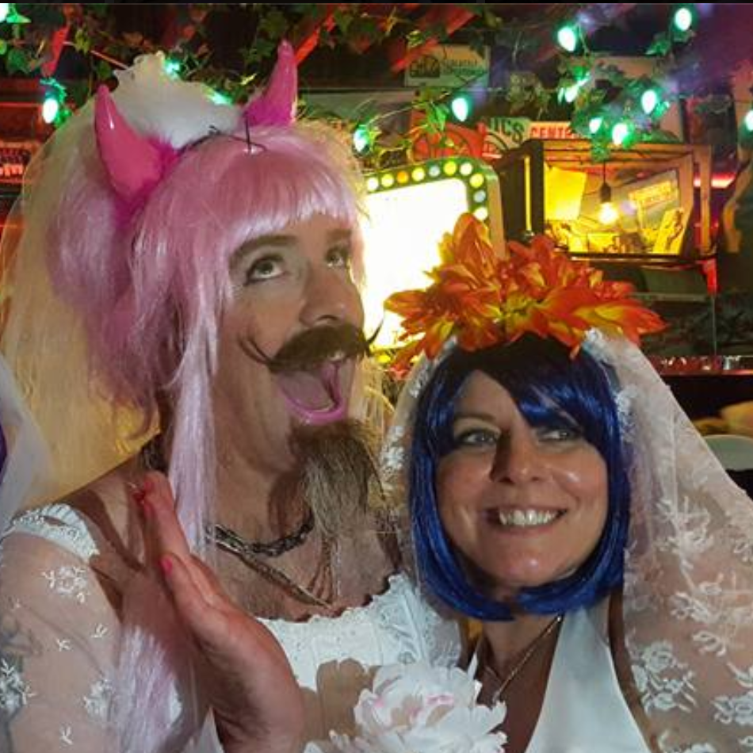

Seattle Brides of March


What is Brides of March?
The Seattle Brides of March is an annual pub crawl and antics in a chosen neighborhood of night clubs.
Attendees don bridal gowns or other matrimonial outfits including groom suits, bridesmaids dresses or clergy attire.
It’s the perfect opportunity to recycle your wife’s wedding gown from her previous marriage, to dress up as the bride
you always dreamed about without the muss of a real wedding, or to just join a heretically eclectic crew of Seattle’s
foremost partyers in formal wear.
Features include a “Best of Brides” costume contest, and most importantly—the big wedding ceremony to the new Groom of the Year. Divorcés of yesteryear have included George Washington at UW, the Firefighters of Pioneer Square, and Jimi Hendrix on Broadway.
If you’re old enough to enter a bar, can rally up an outfit, and understand the social graces of a pub crawl*, consider yourself invited! We look forward to seeing you in your bridal best...or worst! Be sure to also go to the Facebook event invitation to “accept” it, as well as to invite other friends.
*Introduce yourself to the brides you haven’t yet met, be respectful of the other patrons in the bars we visit, be responsible for your booze consumption, and bring extra cash to tip the bartenders.
Features include a “Best of Brides” costume contest, and most importantly—the big wedding ceremony to the new Groom of the Year. Divorcés of yesteryear have included George Washington at UW, the Firefighters of Pioneer Square, and Jimi Hendrix on Broadway.
If you’re old enough to enter a bar, can rally up an outfit, and understand the social graces of a pub crawl*, consider yourself invited! We look forward to seeing you in your bridal best...or worst! Be sure to also go to the Facebook event invitation to “accept” it, as well as to invite other friends.
*Introduce yourself to the brides you haven’t yet met, be respectful of the other patrons in the bars we visit, be responsible for your booze consumption, and bring extra cash to tip the bartenders.